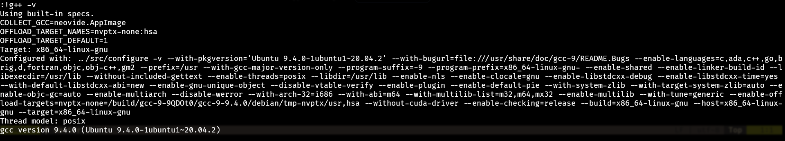
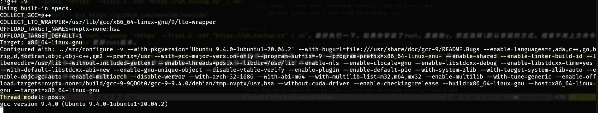

neovide安装与使用
安装方法
1.使用appimage 作为执行文件
将neovide.appimage加上可执行权限即可，chmod + x neovide.appimage。但这种方法存在一定缺陷，环境变量的设置会出现一定问题。例如在命令行中输入:!g++ -v与在终端输出的结果不一样.
 
上方图片为neovide.appimage产生的输出，下方为使用rust编译的neovide产生的输出。
上面环境变量COLLECT_GCC=neovide.appimage，编译c++程序后会导致报错。
下面输出与终端中输出一致，编译程序输出正确。
2. 使用rust编译源码安装
按照安装指南的引导，使用如下命令： 1
2
3
4
5
6
7
8
9
10
11sudo apt install -y curl \
gnupg ca-certificates git \
gcc-multilib g++-multilib cmake libssl-dev pkg-config \
libfreetype6-dev libasound2-dev libexpat1-dev libxcb-composite0-dev \
libbz2-dev libsndio-dev freeglut3-dev libxmu-dev libxi-dev libfontconfig1-dev \
libxcursor-dev
curl --proto '=https' --tlsv1.2 -sSf "https://sh.rustup.rs" | sh
cargo install --git https://github.com/neovide/neovidecurl --proto '=https' --tlsv1.2 -sSf "https://sh.rustup.rs" | sh，最好执行一下，如果你安装了rust，直接按y，然后选择1默认安装的方式。或者不用上方命令，使用rustup update更新rust版本。
最后cargo install --git https://github.com/neovide/neovide，将项目使用rust编译，记住，一定要设置环境变量CARGO_TARGET_DIR例如export CARGO_TARGET_DIR=${HOME}/.cargo/bin，如果没有这个设置，那么编译之后结果位置就没有指定，可能会编译到tmp中的某个文件夹中。
编译完成后，可执行文件就在CARGO_TARGET_DIR中
配置文件
配置文件直接方法nvim中的lua脚本中。这里给出当前配置情况。
1
2
3
4
5
6
7
8
9
10
11
12
13
14
15
16
17-- 配置方法情参考https://neovide.dev/configuration.html
vim.g.neovide_fullscreen = true -- 设置客户端是否全屏
vim.g.neovide_transparency = 0.7 -- 设置客户端透明度
vim.g.neovide_hide_mouse_when_typing = true -- 控制输入时鼠标是否存在
-- 特效情况控制
vim.g.neovide_cursor_vfx_mode = "sonicboom" -- normal与输入模式切换的特效
--vim.g.neovide_cursor_vfx_mode = "ripple"
--vim.g.neovide_cursor_vfx_mode = "railgun" -- 光标移动时的特效
--vim.g.neovide_cursor_vfx_mode = "wireframe"
vim.g.neovide_cursor_animate_command_line = true --关闭切换状态时，光标在缓冲区窗口与命令行之间的跳动,true是开启这个特效
vim.g.neovide_cursor_animate_in_insert_mode = true -- 开启insert状态光标特效情况，false无特效
vim.g.neovide_profiler = false-- 可能是显示帧率的一个东西
vim.g.neovide_refresh_rate = 144 -- 设置刷新率
vim.g.neovide_cursor_trail_size = 0.8 -- 光标拖尾长度
-- 如果进入neovide时输入法为中文输入法，那么说明中文输入法在输入法管理器中优先级比较高，把英文输入法的优先级调高即可
--neovide 设置结束